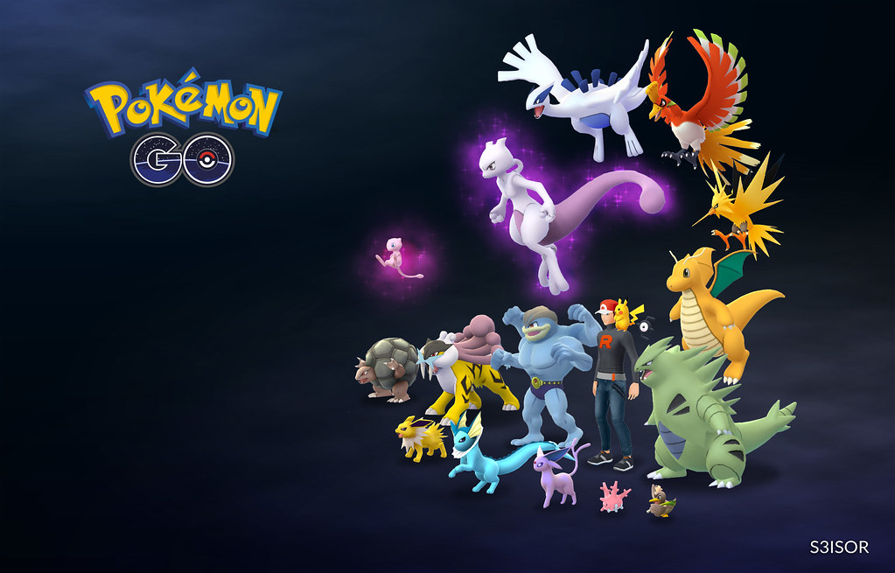

Jugar Videojuegos
Desde muy pequeñito he jugado a los videojuegos. Cuando tenia 3 añitos empecé con
la Nintendo DS jugando a Pokemon, Mario Bros, Nintendo Dogs y Rayman. Desde entonces he jugado
a videojuegos, aunque ahora ya no juego tanto en consola sino en PC, pero sé que toda mi vida seguiré jugando, ya que es
un modo de evadirme del mundo y de estar en un modo de desconexión.

Escuchar música
Si hay algo que por nada en el mundo dejaría de hacer es escuchar música. No miento si digo que al dia
puedo escuchar mas de 8 horas de música, ya que haga lo que haga, me pongo música. Ya sea para estudiar, para jugar,
para pasar el rato, cuando estoy de camino al instituto. En cualquier momento me gusta escuchar música. Principalmente escucho
trap argentino, entre los que está mi artista favorito Duki, pero tambien escucho pop y rap, ya sea en inglés o español.